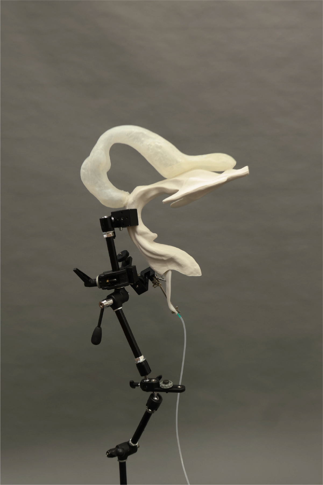

The piece simulates the mechanisms of vocal cords and resonant cavities, making a voice the central expressive medium of the installation.
This work consists of hollow sculptures made from porcelain and soap, integrated with a custom-built, deformable silicone structure. Guided by an air pump, controlled airflow is introduced to reconstruct a humanoid vocal tract and produce a voice.
Taking humanoid voice as its starting point, the work treats a voice itself as a medium to explore how it functions as a “converter” between consciousness/concept and material form. On the one hand, a voice—being immaterial—translates thought into perceptible existence; on the other, it also reveals how material form is shaped by concepts and perception. The work poses a key question: can the boundary between consciousness and matter be disrupted by the mediating presence of a voice? In doing so, it presents a dynamic interplay of internal and external, abstract and concrete, mind and matter—within a single constructed entity.
This constructivist experimental installation unfolds in a state of “ongoing generation,” emphasizing its open-ended, non-finite nature. It echoes the idea of the “Material-Discursive Apparatus,” revealing how binary structures continuously interact and redefine each other in process.
Visually, the work draws upon references such as 3D modeling, medical imaging, and anatomical diagrams to approximate the spatial volume of the human oral and nasal cavities, thereby constructing a humanoid acoustic resonance chamber. The silicone structure is connected to the air pump; through tubes, micro-controlled airflow is introduced to generate different vocalizations, simulating the vibration mechanism of vocal cords.
Further lines of inquiry include: can humanoid voice serve as a key factor in constructing the subjectivity of artificial intelligence? Does future intelligence necessarily require a voice—or similar technological forms—as a medium to develop independent consciousness structures? If a voice is understood as an immaterial yet perceivable phenomenon, does it also point to the complex and fluid relationship between body and consciousness?
This work is not only a simulation and reconstruction of the vocal mechanism, but also a reflection on how “intelligence” might be embodied, formed, and perceived—whether within the human body or in non-human systems.

